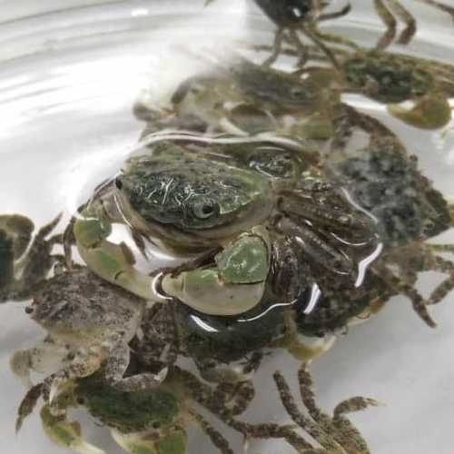

Software projects
Personal website
2019
A personal website built by me using CSS, HTML, and JavaScript. It is simple, unique to my taste and it is created with a responsive design. It contains effects such as parallax scrolling and collapsing navbar to promote a smooth layout transition.
Space invader
2017
A project done in Python. A game with reactive audio feedback and controls, all within the GUI built using the Turtle library.
Global AI Hackathon
2017
A group project done within a two days time limit. The program is an AI that was designed to identify whether a given sentence is a joke or not. Using modified data parsed from varies websites, it was trained with supervised learning to obtain an accuracy of roughly 86%.
Train station timetable and GPS tracking app
2015
An android application created for the London metro system in Java. The data was collected using an API call and was stored into appropriate data structures. It displays detailed station information of user’s choosing that is responsive to their location.
Research projects
The effects of temperature on the Oxygen Production of Chlamydomonas reinhardtii
2018
An experiment done to understand how temperature affects the oxygen production of Chlamydomonas reinhardtii, and in turn, affects the population of salmon in the environment. The experiment was designed after extensive literature research and was carried out with common laboratory procedures. This includes sterile techniques to ensure little to no contamination of our subjects. Ultimately, we found no significant difference.
Identification of synthetic lethality partners (Research Experience Program)
2018
A project mainly done to understand the process of researching. A hypothetical experiment designed using conventional experimental design procedure. Using proper molecular biology techniques and hypothetical data and graphs generated by R, the project was presented at the 2018 Multidisciplinary Undergraduate Research Conference.
Correlation between preference of beverage temperatures and genders
2017
An observational experiment done to understand the relationship between beverage temperature preference and gender. The experiment was carried out at multiple Starbucks at UBC Vancouver campus. After a thorough statistic analysis of the data, no correlation was found.

Influence of temperature on the rate of movement of Hemigrapsus oregonensis
2017
An experiment done to have a better understand of how the environment affects the behaviour of Hemigrapsus oregonensis. It was a separate treatment experiment that kept extraneous variables and treatment temperatures constant. The findings agreed with the hypothesis that temperature does have an effect on this species, which gave us insight on how it behaves in nature.
Genetics of Perchlorate Reduction
2017
This project was done to identify an unknown mutated gene and find the source of the mutated phenotype. The species of this gene along with the position of the mutation were identified using multiple genetic tools such as GenBank, BLAST, and ExPASy.